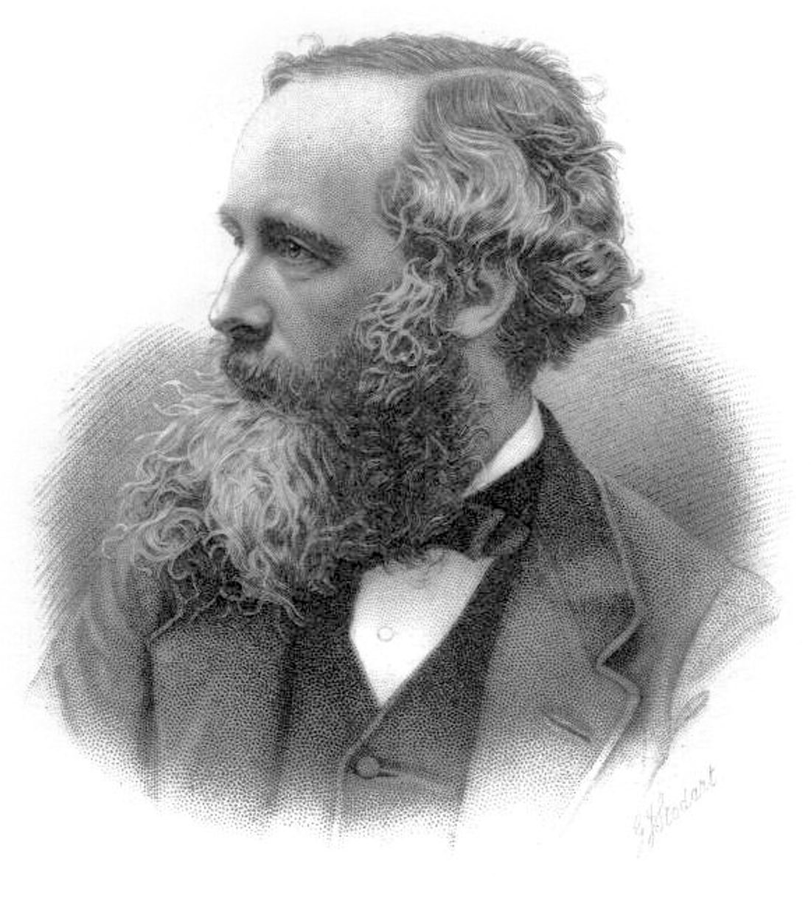
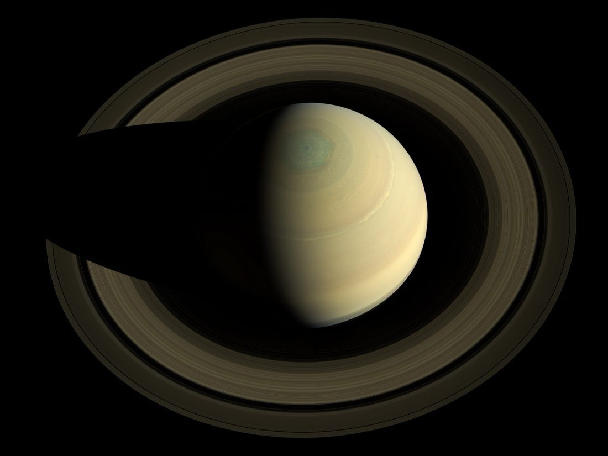
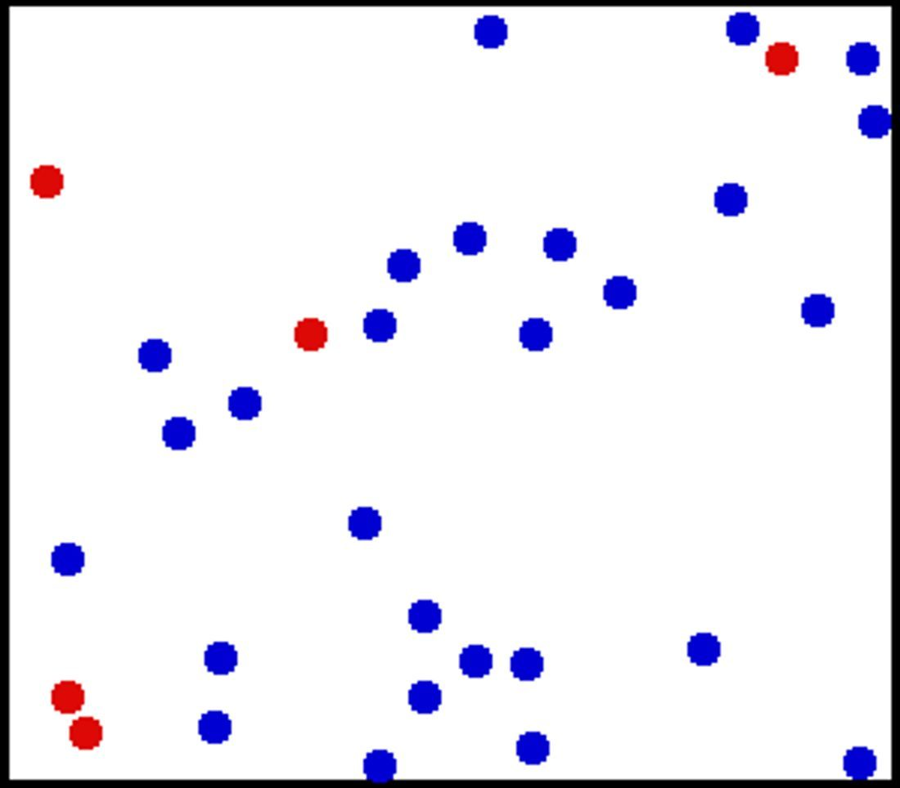
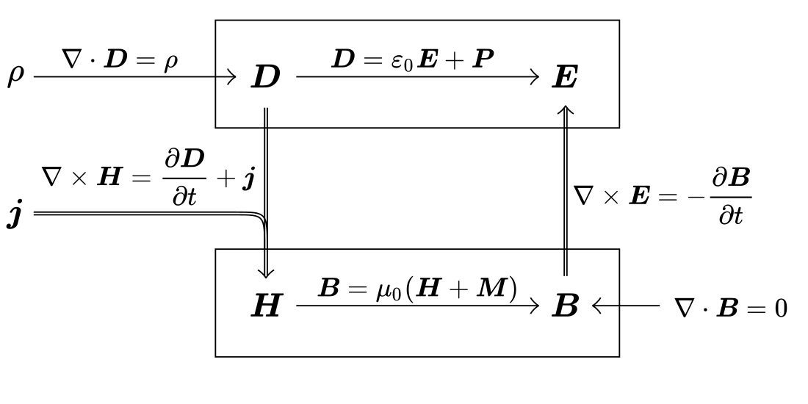
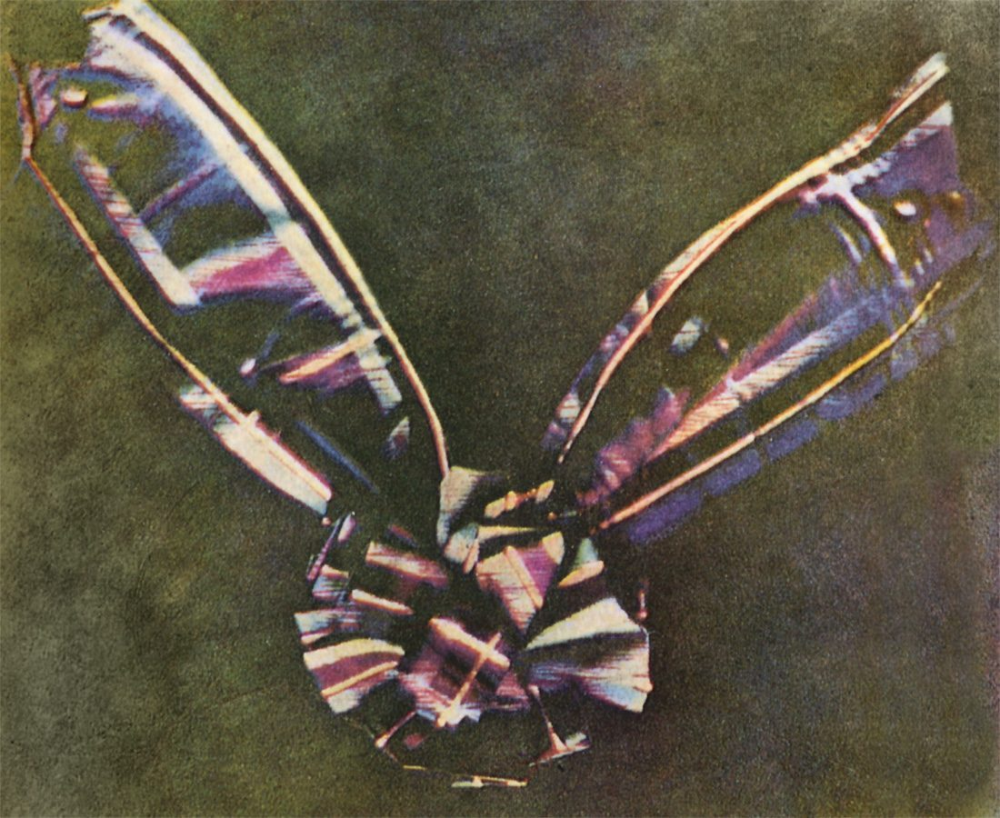
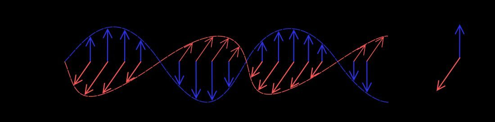

1831
生于爱丁堡

6 月 13 日，詹姆斯·克拉克·麦克斯韦出生。他自幼好奇，爱自己动手做实验。
1847
爱丁堡大学
进入爱丁堡大学，早早展现出数学与实验天赋，开始独立思考自然规律。
1850
剑桥求学

到剑桥大学深造，获数学荣誉，结识一批一流的物理学与数学头脑。
1859
土星环论文

发表土星环稳定性研究，用数学证明环只能由无数小颗粒构成，获亚当斯奖。
1860
气体动理论

他提出气体分子速率分布律，开创统计物理，把“随机”与“确定”第一次拴在一起。
1861
方程组初成

他发表早期论文，把电、磁、感应的规律收纳进统一的方程框架。
1861
彩色摄影实验

他根据自己 1855 年提出的三原色理论，用红、绿、蓝三张滤光底片叠合，演示出世界上第一张彩色照片。
1865
预言电磁波与光速

他完善方程组，推出电磁扰动以光速传播，断言光本身是一种电磁波——惊动整个物理学。
1871
执掌卡文迪许实验室
出任剑桥卡文迪许实验室首任主任，把英国实验物理带上新高度。
1873
《电磁通论》
出版《电磁通论》，系统陈述电磁场理论，成为后世电磁学的标准教科书。
1879
逝于剑桥
11 月 5 日，麦克斯韦病逝，年仅 48 岁。他留下的方程，点亮了整个电气时代。
读麦克斯韦方程组：把电、磁、光写成一体 → 读光，原来是一种电磁波 → 读气体动理论：分子在乱窜 → 读土星环：为什么不会散？ →